20 candidates for Emmet's technique library (session 3C, H-22). Each was found in your instruction books and ranked by how widely official models in the LDraw OMR join its key parts (1318 sets mined). Each picture is a render of my sketch of it in Emmet's DSL, which validates with no findings; an accepted sketch becomes the technique, with its tests and render, and a rejected one is dropped. Nothing is taken from the models' files or the books' pages (D-48). Every candidate starts as Accept: switch the ones you don't want, add a note if it helps, then copy your answers and paste them to Claude.
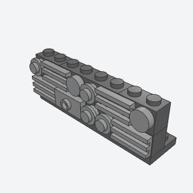
greeble_stripA band of small surface detail (grilles, round plates, tiles, a stud or two) on bricks with side studs, chosen at random from a seed.
The busy machine texture on a spaceship hull or a space-station wall, anywhere a flat side looks too plain.
x, y, z, length, rows, facing, color, detail, seed, titlebatch-5/greeble_strip.py30414 + 2412b + 6141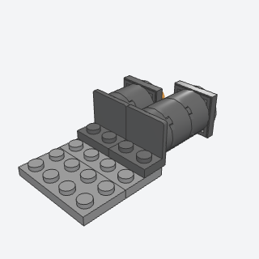
engine_nozzleA round engine pointing out of a ship's stern: round plates and bricks built out from a bracket's side studs, ending in a dish with a glowing center.
The rear thrusters of any spaceship or rocket.
x, y, z, length, facing, color, bell, glow, titlebatch-5/engine_nozzle.py99207 + 3941 + 87580 + 4740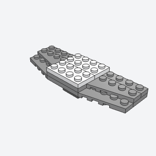
wedge_wingA pair of swept wings from left- and right-handed wedge plates in two layers whose joints cross, so the wings and the deck between them are one stiff plate.
The wings of a starfighter or shuttle, wherever the wings have to be part of the hull and not snap off at a seam.
x, y, z, span, gap, color, titlebatch-5/wedge_wing.py41769a + 41770a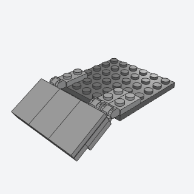
angled_hull_panelA smooth tiled panel hung on click hinge plates along a deck's edge and set at an angle.
The sloped side, nose, or belly of a spaceship's hull, at any angle the hinges hold.
x, y, z, length, depth, angle, facing, color, hinge_color, titlebatch-5/angled_hull_panel.py44302b + 44301b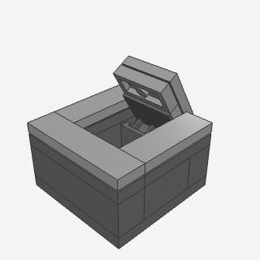
hatch_on_hingeA lid over an opening in a raised floor, on hinge bricks along its back edge, flush when shut or swung open to an angle.
A floor or deck hatch on a ship or base: a hold, a ladder well, an engine bay.
Note: Uses the same hinge bricks (3937 and 6134) as tilting_hood, as a flush floor lid built apart that opens to any angle.
x, y, z, width, depth, angle, color, hinge_color, titlebatch-5/hatch_on_hinge.py3937 + 6134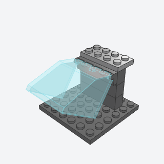
cockpit_canopyA glass canopy hinged at its top to a hinge tile standing on side studs on the wall behind the cockpit, shut or swung up.
An opening cockpit for a fighter, a shuttle, or a buggy, where the pilot climbs in under the glass.
Note: Uses the older windscreen 4 x 4 x 3 with hinge (2620) on hinge tiles (4625): the modern click-hinge canopies have no usable hinge data in the validator, so they'd never count as connected.
x, y, z, angle, color, glass, hinge_color, titlebatch-5/cockpit_canopy.py2620 + 4625 + 30414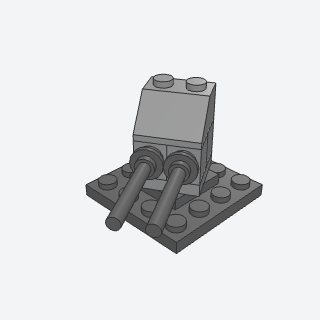
turretA gun turret on a 2 x 2 turntable, its head built as one sub-assembly placed at any aim, with bar barrels in round plates on side studs.
Gun emplacements on a ship, a base, or a walker, turned to face where the scene needs.
x, y, z, aim, guns, color, gun_color, base_color, titlebatch-5/turret.py3680 + 3679 + 87087 + 87994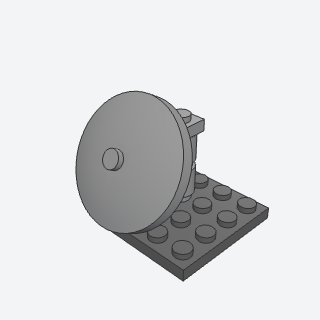
radar_dishA 4 x 4 dish on a mast of round bricks, its carrier's handle held in a clip at the top so it tilts to any angle.
Radar and comms dishes on a station, a base, or a ship's back.
x, y, z, tilt, height, color, dish_color, titlebatch-5/radar_dish.py4081b + 2540 + 3960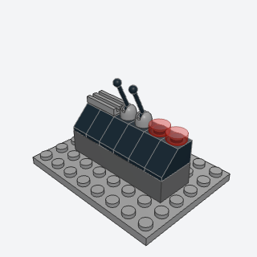
control_consoleA desk of controls: bricks, a course of 45° slopes as screens, and buttons, grilles, and control-stick levers on the studs along the top.
The pilot's or crew's consoles inside a cockpit, a bridge, or a control room.
x, y, z, length, rows, color, panel, seed, titlebatch-5/control_console.py3040b + 4592 + 4593 + 98138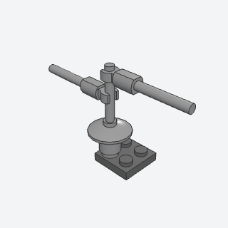
antenna_mastA thin mast from a bar standing in a round brick's hollow stud, with side antennas on bar holders clipped to it.
The comms array on a spaceship, a station roof, or a base.
x, y, z, arms, dish, color, bar_color, titlebatch-5/antenna_mast.py3062b + 30374 + 11090 + 87994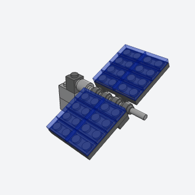
solar_panelA pair of mirror-image solar panels clipped onto a bar boom from a side stud, turning together about the boom.
Solar arrays on a space station or a satellite.
x, y, z, width, tilt, color, cells, boom_color, titlebatch-5/solar_panel.py63965a + 4081b + 3062b + 3069b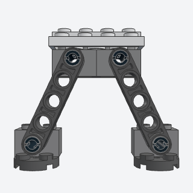
landing_legA splayed Technic beam leg pinned under a hull, with a foot pinned to its end that stays level, so the ship stands on its pads.
Landing gear for a lander, a shuttle, or a walker that has to stand on its own feet.
x, y, z, side, splay, length, color, leg_color, pin_color, titlebatch-5/landing_leg.py3700 + 2780 + 32316 + 4032a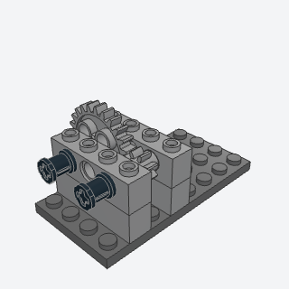
gear_pairTwo meshing Technic gears on axles through a pair of Technic bricks, turned half a tooth so they interlock, in ratios 24:8, 8:24, 16:16, 24:24, or 8:8.
Any hand-turned or motorized function that needs a speed change or a reversal.
Note: Meshing is set by turning the second gear half a tooth; the spacing is real Technic spacing, but the validator only checks that the teeth don't collide.
x, y, z, ratio, color, gear_color, axle_color, titlebatch-5/gear_pair.py3701 + 3705 + 3648b + 3647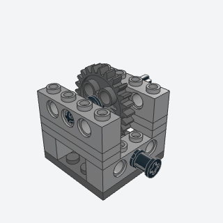
worm_driveA worm gear on one axle turning a 24-tooth gear on an axle across it, in a frame of Technic bricks and plates that puts the axles 5 plates apart.
Slow, self-locking turns: a crane's winch or slewing ring, a drawbridge, a turntable that must hold its place.
Note: The worm sits 5 plates from the 24-tooth gear, real Technic spacing; the validator only checks that they don't collide.
x, y, z, color, gear_color, worm_color, axle_color, titlebatch-5/worm_drive.py4716 + 3648b + 3701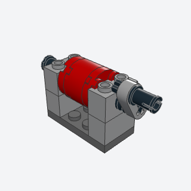
crank_winchA drum of round plates and a round brick on an axle between two Technic bricks, turned by a thin liftarm crank with an axle pin handle.
A hand winch for a crane, a tow truck, a well, or a drawbridge.
x, y, z, crank, color, drum_color, axle_color, titlebatch-5/crank_winch.py3700 + 3706 + 3941 + 41677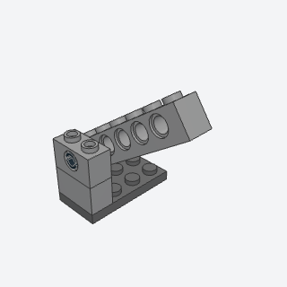
technic_pin_hingeAn arm of Technic brick swinging on a friction pin through the hole of a Technic brick beside it, set to any angle.
Booms, lids, and gull-wing doors that swing on a pin and stay where they're put.
x, y, z, length, angle, color, arm_color, pin_color, titlebatch-5/technic_pin_hinge.py3700 + 2780 + 3894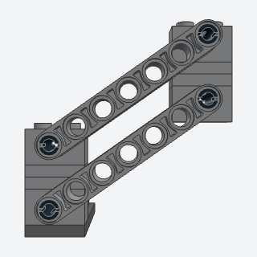
lift_arm_linkageTwo parallel Technic beams pinned to a post and to a head, a parallelogram, so the head swings up and down and stays upright.
A lifting arm that keeps its load level: a forklift-style lift, a cherry picker, a robot arm, a car wash brush.
x, y, z, length, angle, color, beam_color, pin_color, titlebatch-5/lift_arm_linkage.py3700 + 2780 + 32524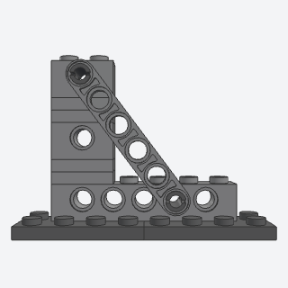
technic_braceA thin beam pinned across the corner of a Technic brick frame on a 3-4-5 triangle, so both its end holes land on the frame's holes.
Stiffening a tall Technic tower, crane boom, or frame so it doesn't rack.
x, y, z, color, beam_color, pin_color, titlebatch-5/technic_brace.py3894 + 3700 + 32063 + 32002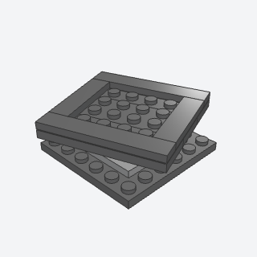
rotating_platformA deck of plates and edge tiles built on a 4 x 4 turntable's top as one sub-assembly, placed turned to any angle.
A turning base for a crane cab, a radar room, a display stand, or a carousel.
x, y, z, size, angle, color, base_color, titlebatch-5/rotating_platform.py3403 + 3404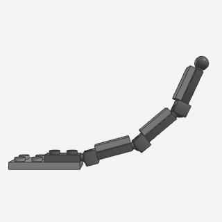
ball_joint_armA chain of 1 x 2 plates with a ball on one end and a socket on the other, snapped together and posed in a curve.
A posable robot arm, crane jib, tentacle, or cable that bends at every joint.
x, y, z, segments, rise, bend, color, joint_color, tiles, titlebatch-5/ball_joint_arm.py22890 + 14419